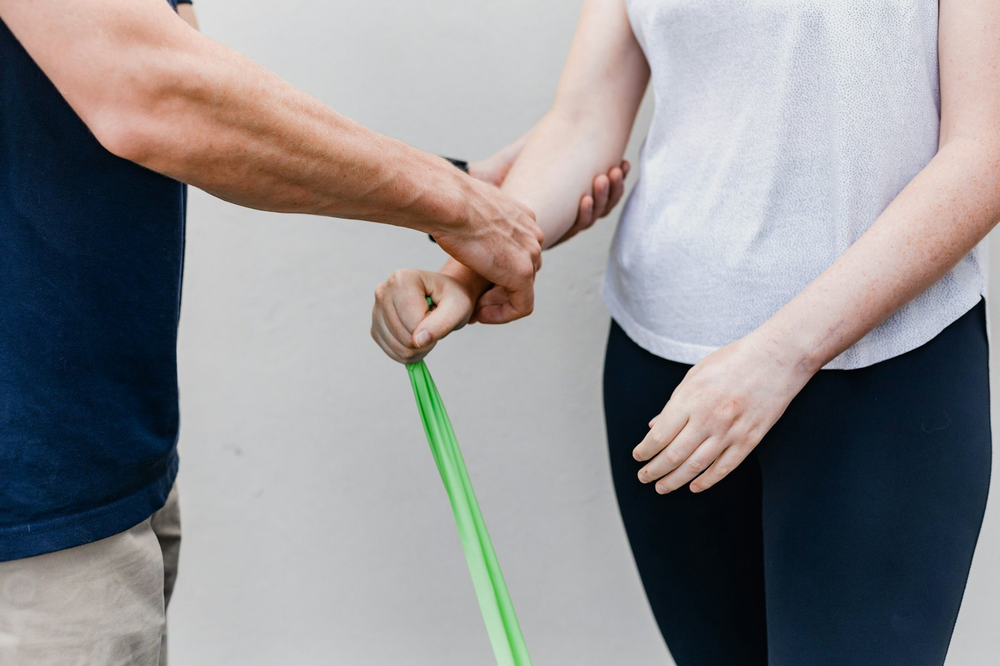
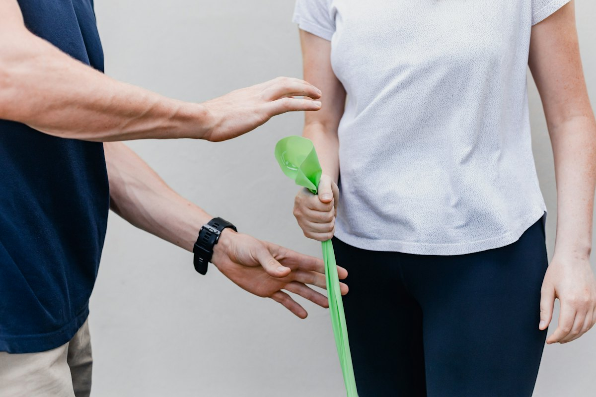
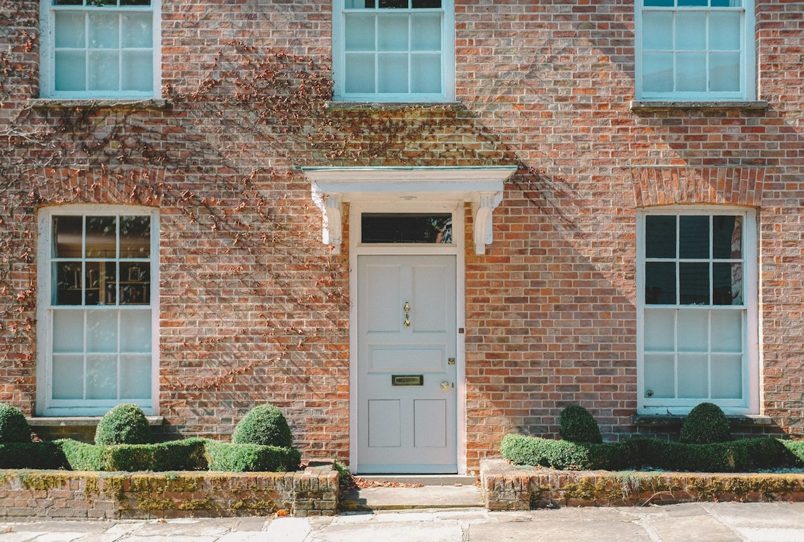

Fysiotherapie Heuvels: Sterk inbewegen
Welkom bij Sjors Heuvels
Wil je weer makkelijker bewegen? In zijn praktijk aan huis kijkt Sjors samen met jou wat er speelt en wat je nodig hebt om verder te komen. Je wordt altijd door Sjors zelf behandeld.
Maak kennis met SjorsHiervoor kun je bij Sjors terecht
[Klacht 1]
[Hoe Sjors dit behandelt en wat je kunt verwachten. Noem de klacht zoals patiënten die zelf noemen, bijvoorbeeld rugpijn.]
[Klacht 2]
[Hoe Sjors dit behandelt en wat je kunt verwachten.]
[Klacht 3]
[Hoe Sjors dit behandelt en wat je kunt verwachten.]
Twijfel je of je met jouw klacht bij Sjors terechtkunt? Bel de praktijk om te overleggen.
Zo vraag je een afspraak aan- Geregistreerd fysiotherapeut
- [BIG-nummer en kwaliteitsregister, met link naar het register]
- Vergoeding
- [In één zin, bijvoorbeeld met welke zorgverzekeraars Sjors een contract heeft]
- [Beoordeeld door patiënten]
- [Cijfer met link naar ZorgkaartNederland of Google, als Sjors dit wil tonen]

VoorbeeldfotoWie is Sjors?
[Korte introductie in Sjors' eigen woorden: wie hij is, zijn opleiding en ervaring, en hoe hij werkt.]
[Tweede alinea: wat je als patiënt van hem mag verwachten, in de ik-vorm.]
Zo vraag je een afspraak aan
Kies het soort afspraak
Een eerste afspraak als je nieuw bent of een nieuwe klacht hebt. Anders een vervolgafspraak.
Laat je gegevens achter
Met een voorkeursmoment: wanneer komt het je goed uit?
Sjors neemt contact op
Hij legt de afspraak met je vast. Je afspraak is definitief zodra Sjors die bevestigt.
Een eerste afspraak duurt 45 minuten en kost [TARIEF]. Een vervolgafspraak duurt 30 minuten en kost [TARIEF].
of bel [TELEFOONNUMMER]
Zo vind je de praktijk
De praktijk zit bij Sjors aan huis in [PLAATSNAAM]. Het volledige adres en de route krijg je in je afspraakbevestiging.

Voorbeeldfoto- Ingang
- [Waar de ingang van de praktijk is, bijvoorbeeld een eigen deur naast de voordeur.]
- Parkeren
- [Waar je kunt parkeren, met auto en fiets.]
- Toegankelijkheid
- [Drempels, trappen en bereikbaarheid met rolstoel, rollator of krukken.]
- Wachten bij aankomst
- [Waar je kunt wachten, en of je aanbelt of kunt doorlopen.]
Tarieven en vergoeding
Tarieven per [DATUM]
- Eerste afspraak (intake en onderzoek)
- [TARIEF]
- Vervolgafspraak
- [TARIEF]
- [Overige behandeling]
- [TARIEF]
[Vergoeding: met welke zorgverzekeraars Sjors afspraken heeft en wat je zelf betaalt.]
Veelgestelde vragen
Hoe verloopt het eerste bezoek?
[Wat er gebeurt tijdens de eerste afspraak en hoe lang die duurt.] De intakevragen vul je vooraf in via de beveiligde zorgomgeving van de praktijk. Daarvoor krijg je een aparte uitnodiging.
Wat moet ik meenemen?
[Wat je meeneemt, bijvoorbeeld een identiteitsbewijs, een eventuele verwijsbrief en kleding waarin je makkelijk beweegt.]
Wat kost een behandeling?
De actuele prijzen staan bij Tarieven en vergoeding. [Eventuele toelichting, bijvoorbeeld hoe je betaalt.]
Wordt fysiotherapie vergoed?
[Hoe vergoeding bij deze praktijk werkt en waar je je eigen polis kunt nakijken.]
Heb ik een verwijzing nodig?
[Of je zonder verwijzing van de huisarts terechtkunt, en wanneer een verwijzing wel nodig is.]
Hoe verzet of annuleer ik een afspraak?
Via de link in je bevestigingsmail kun je zelf verzetten of annuleren, tot [TERMIJN] voor de afspraak. Daarna bel je de praktijk. [Wat er gebeurt als je te laat annuleert.]
Staat je vraag er niet bij? Bel [TELEFOONNUMMER].